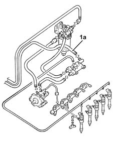

1060A Check low pressure fuel circuit
- Path
- Test > 10 ENGINE > 1060 DIESEL FUEL INJECTION > 1060A Check low pressure fuel circuit
- Kind
- test / check procedure
- Applies to
- engines: 1.9 JTD 8v , 1.9 JTD 16v, 2.4 JTD 10v; all production periods
- Interactive page
- https://sloeber94.github.io/elrnDB-a156/en/#/3239147
Applies to: engines: 1.9 JTD 8v , 2.4 JTD 10v; all production periods; only with equipment: Euro 3
Connect the pressure transducer for the Examiner diagnostic equipment to the return pipe to the tank (1a).
Turn the ignition on (MAR).
Check that, within 30 seconds, the pressure gauge's reading is less than 1 bar.

Applies to: engines: 1.9 JTD 16v; all production periods
1 Connect the pressure transducer for the Examiner diagnostic equipment to the return pipe to the tank (1a).
Turn the ignition on.
Check that, within 30 seconds, the pressure gauge's reading is less than 1 bar.